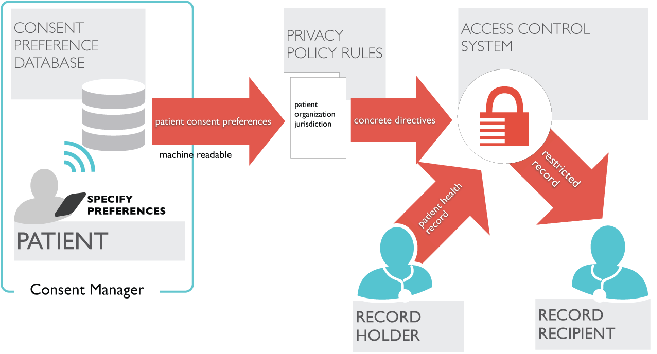

screenshots
summary
The Kairon User Interface (Kairon UI) demonstrates a notional approach for managing and enforcing patient preferences for sharing their health information. The system allows the patient to indicate:
- what personal data should or should not be shared
- who can send and receive information
- when and for what purpose information may be shared
Need
A patient visits a chiropractor to have his back examined. He wants to share the fact that he is taking a particular medication for pain, but not that he was once treated for PTSD.
Although patients may want control over how their health information is shared, existing patient consent/choice approaches are:
- Currently limited, generally offering a choice of sharing “all” or “nothing”
- Static and paper-based
- To the extent offered, separately administered by each provider or healthcare entity
Future Vision
Kairon UI allows a patient (or designated proxy) to state and modify personal consent preferences at anytime and anywhere via a web interface.
- The patient can maintain a single set of preferences, which can be used to specify different consents for different providers
- Patients have granular choices that go beyond simple “all or nothing” options and can easily update these choices as their needs change.
- Patient decision-making is supported by just-in-time, context sensitive education to ensure meaningful choice and real-time feedback that demonstrates the impact of their choices on sharing.
Technical

Systems Architecture
The Kairon UI is intended to work within a larger consent management system architecture. This diagram depicts an example of what this architecture might look like.
- The patient selects a consent service provider and can specify consent preferences, which will be maintained in a consent database. Patients can create and modify their preferences using the Kairon UI system.
- The patient preferences are converted into a machine-readable format and are evaluated against applicable consent rules and regulations. This yields concrete directives, which are sent to an access control system.
- The access control system uses the patient-generated consent rules to share the appropriate information with the record recipient.
Additional details on system architecture and the scope of the project: